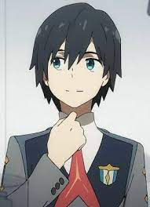
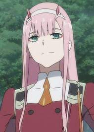
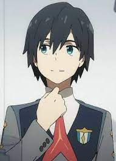
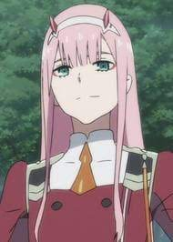

Darling in the Franxx is set in a dystopian future where children are artificially created and indoctrinated solely to defend the remnants of civilization. The story follows a squad of ten pilots, particularly focusing on the partnership between Hiro, a former prodigy, and Zero Two, a hybrid human and elite pilot who aspires to become entirely human.
The animation began international distribution simultaneously upon its domestic release. The streaming service Crunchyroll internationally simulcast the series, with Aniplus Asia simulcasting the series in Southeast Asia. Service partner Funimation began the dubbed release of the series in February 2018.
The opening song